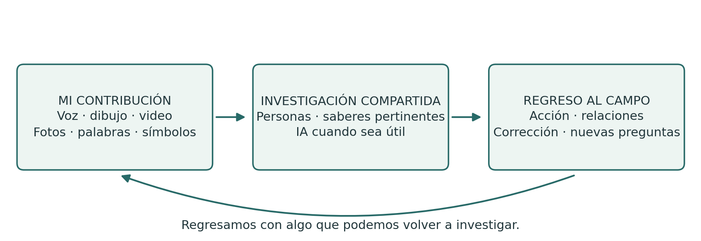
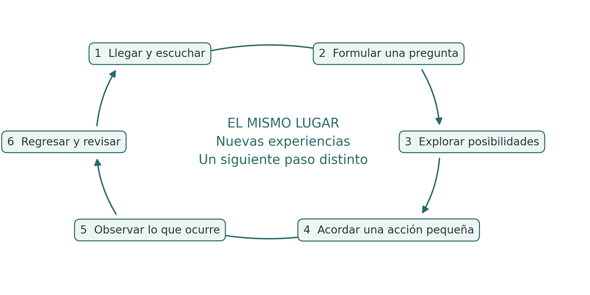
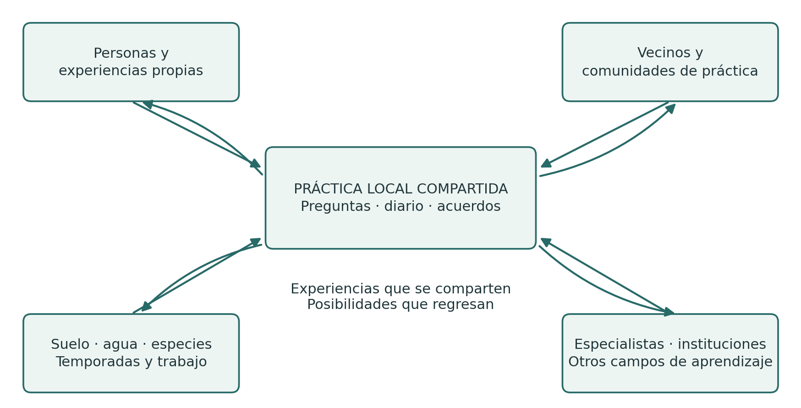
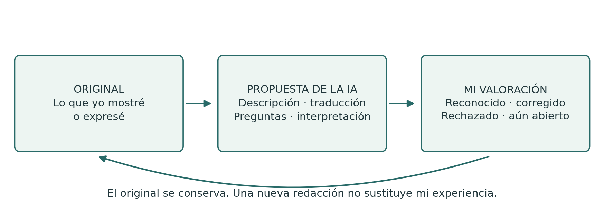

Diario de Campo
Diario de Campo
De la experiencia propia a la capacidad de actuar en común
Guía práctica de las espirales de aprendizaje, el PG Ledger y el diálogo crítico con la IA
Edición en español de México v1.0 · 24 de octubre de 2026
Publicado por Spiralweb Stewardship Association · Spiralweb Papers
Desarrollado en el marco de Learning with Living Places
Diario de Campo es una guía práctica abierta, publicada por Spiralweb Stewardship Association en Spiralweb Papers. Parte del trabajo de las personas en un lugar vivo: algo se observa, se registra y se investiga en conjunto. Una acción se vuelve posible y la experiencia modifica el siguiente paso. La guía relaciona este movimiento con conocimientos pertinentes, el diálogo crítico con la IA y recursos que pueden sostener la vida del lugar y la continuidad del trabajo.
Comienza con algo concreto de tu propia práctica. La palabra hablada, el dibujo, los símbolos propios, la fotografía, el video y la escritura pueden conservar una experiencia. El grupo acuerda el acceso a las herramientas y el apoyo que necesita; tener teléfono propio no es un requisito. Una contribución elegida sirve de referencia para comparar y corregir después. De manera individual o en grupo, las personas asumimos el papel de amigos críticos de la IA. La experiencia viene primero; no todo lo vivido tiene que registrarse.

Una práctica integrada
El diario reúne tus propios registros de experiencia. La investigación compartida relaciona contribuciones elegidas con una pregunta. El PG Ledger conserva la memoria acordada de acciones, decisiones, recursos y lo que ocurre después. La espiral de aprendizaje es el regreso mediante el cual la experiencia puede modificar la comprensión y la práctica. Las páginas siguientes muestran primero una investigación completa y después explican sus distintas funciones.
La guía reúne una aplicación práctica de Healthy Roots, el PG Ledger y la autoridad humana al trabajar con IA. En spiralweb.earth se encuentran la Asociación y sus relaciones con lugares concretos. En papers.spiralweb.earth se encuentran textos, protocolos y herramientas. El material puede utilizarse sin establecer una colaboración con la Asociación. La experiencia propia también puede dar lugar a propuestas para modificar las herramientas comunes.
Utiliza la guía de manera independiente y adáptala al contexto local. Sigue la introducción, comienza con una pregunta actual o consulta los formatos según los necesites. Nadie tiene que llenar todas las hojas. El índice es interactivo; los enlaces en los conceptos llevan a los textos de referencia. Las hojas reproducibles aparecen después del texto principal.
Diario de Campo · v1.0 1 / 27
Contenido y herramientas prácticas
Lee primero el ejemplo de una investigación completa y la explicación de la diferencia entre diario y ledger. El texto principal está en las páginas 3 a 13. Las hojas para tus propias contribuciones están en las páginas 14 a 16. Cuando el grupo necesite una memoria compartida, elijan entre los formatos de las páginas 17 a 26.
03 Una investigación desde la primera observación hasta el regreso
04 Diario, investigación compartida y PG Ledger
05 Los seis movimientos de la espiral de aprendizaje
06 Experiencias con un origen claro
07 Valoraciones, lo desconocido y lo que no se registra
08 De las contribuciones propias a una pregunta común
09 Ser amigos críticos de la IA
10 Actividades de aprendizaje con un propósito claro
11 Organizar el trabajo a lo largo del tiempo
12 Stewardship economy y posibilidades compartidas
13 Memoria compartida, responsabilidad y verificación
14 Hoja para mi propia contribución
15 Hoja para un ensayo y un regreso
16 Hoja para el diálogo con la IA y las decisiones de compartir
17 Cuando el grupo necesita una memoria compartida y Formato 1
21 Formato 3 Acción delimitada
23 Formato 4 Memoria de decisiones
25 Formato 5 Registros financieros
27 Para seguir leyendo y condiciones de uso
¿Quién utiliza qué? El diario y las hojas de apoyo están disponibles para todas las personas. La observación y la acción, formatos 2 y 3, apoyan la investigación del grupo. Los formatos 1, 4 y 5 apoyan la valoración conjunta, las decisiones y los registros financieros. Las personas con responsabilidades acordadas mantienen y confirman los registros; toda persona involucrada debe poder preguntar y corregir.
Nadie tiene que llenar todas las hojas. Los campos pueden dejarse vacíos y no deben completarse mediante suposiciones. Elijan los medios de expresión y la cantidad de documentación que la tarea requiera.
Diario de Campo · v1.0 2 / 27
Una investigación desde la primera observación hasta el regreso
Este ejemplo muestra cómo pueden trabajar juntos el diario, la conversación, las herramientas y la acción. Es una propuesta para probar, no el relato de una actividad ya realizada.
Algo llama la atención
Una cultivadora graba en video una zona de suelo seco y explica en su lengua lo que ha observado. Otra persona dibuja una zona que parece más húmeda. Cada una conserva su contribución en el diario con una referencia sencilla. En este momento tienen distintas observaciones y posibles explicaciones.
Toma forma una pregunta común
En una reunión presentan las contribuciones que eligieron. El grupo compara las experiencias y decide investigar la cobertura del suelo. Explica su elección y guarda otras preguntas para después. La IA puede ayudar a reformular las contribuciones y sugerir explicaciones pertinentes. Las personas las revisan y corrigen los saltos injustificados de la observación a la afirmación.
Se acuerda una acción
El grupo define un ensayo pequeño, aclara las facultades y los permisos necesarios y acuerda tiempos, responsabilidades, materiales y la próxima visita. La hoja de acción conserva el acuerdo. Una referencia puede relacionar una contribución del diario con la memoria compartida sin reescribirla.
Se hace visible el trabajo que requiere el ensayo
Un vecino ofrece restos de poda. El equipo revisa si son adecuados y acuerda el transporte y los cuidados posteriores. Advierte que, de otro modo, una persona cargaría con demasiado trabajo entre reuniones. La pregunta se amplía: ¿cómo sostener los cuidados necesarios? Una decisión y un gasto real se registran en sus formatos correspondientes.
El terreno y el grupo responden
En la siguiente visita pertinente, las nuevas observaciones se comparan con el punto de partida. La IA ha sugerido que se utilizó menos agua, pero eso no se midió. El grupo corrige el texto y examina qué puede afirmar. Quizá el transporte exigió demasiado trabajo, o la diferencia se deba a otras condiciones. Se modifican el ensayo y la distribución del trabajo.
La experiencia abre una nueva posibilidad
Ahora el grupo puede invitar a una persona asesora o a una escuela de campo para investigar una pregunta mejor definida. Un nuevo acuerdo puede facilitar materiales, aprendizaje o remuneración para el seguimiento necesario. Al volver a la investigación, el grupo examina qué se hizo realmente posible. La comprensión compartida tiene mejores fundamentos, aunque persistan desacuerdos e incertidumbres.
Este proceso puede durar varias jornadas de trabajo o una temporada. Una mejor pregunta, una pausa necesaria o una decisión razonada de no continuar pueden ser resultados importantes de volver a la investigación.
Diario de Campo · v1.0 3 / 27
Diario, investigación compartida y PG Ledger
El diario y el ledger conservan distintas partes de una misma práctica. El diario da espacio para observar e investigar. El ledger relaciona material elegido con la memoria compartida necesaria para asumir responsabilidades y dar seguimiento. La espiral de aprendizaje es el movimiento a lo largo del tiempo; no es otro documento.
Elemento | Función | Ejemplo concreto |
|---|---|---|
Mi diario | Mis observaciones, preguntas, ensayos y reflexiones en los medios que elija. | Un video del movimiento del agua con mi explicación. |
Investigación compartida | Conversación, comparación y contraste con conocimientos pertinentes sobre una pregunta elegida. | Investigamos por qué se acumula agua aquí. |
PG Ledger | Una memoria acordada y corregible de los fundamentos del trabajo, las responsabilidades, los recursos y sus consecuencias posteriores. | La observación se relaciona con una acción y una visita posterior. |
Cinco formatos operativos | Herramientas para situaciones concretas dentro de la memoria compartida. | Una hoja registra una acción; otra, un gasto. |
Regreso | La experiencia puede modificar la comprensión, los acuerdos y los siguientes pasos. | Después de la lluvia, revisamos el ensayo y lo modificamos. |
Cuándo un material del diario se vuelve pertinente para el ledger
Cuando el grupo tiene un propósito claro para recuperar una contribución y relacionarla con el trabajo común, acuerda qué parte incluir, quién tiene acceso y cómo puede corregirse. Una referencia al original puede ser suficiente. El material personal no se vuelve compartido automáticamente, y nunca es necesario incluir el diario completo.
Qué hace del ledger una memoria viva
Una hoja por sí sola es un registro. Los registros relacionados se convierten en una memoria útil cuando sus conexiones, fuentes y responsabilidades pueden rastrearse. El PG Ledger cobra vida al regresar: las personas investigan qué ocurrió después y dejan que lo aprendido modifique el siguiente paso. Llenar cinco formatos no basta para establecer esta práctica.
Un diario personal puede mantenerse independiente. El trabajo compartido también puede comenzar con un sistema local de registro ya existente o con una conversación. La experiencia importa antes de registrarse; una hoja no es condición para ser escuchado. Lo importante es la relación entre experiencia, acuerdo, acción y corrección.
Diario de Campo · v1.0 4 / 27
Los seis movimientos de la espiral de aprendizaje
El aprendizaje surge al volver a una pregunta, a sus consecuencias prácticas y a las experiencias de otras personas. Una vuelta de la espiral puede durar una conversación, varias jornadas de trabajo o una temporada. La secuencia ofrece orientación; el ritmo y los regresos siguen las necesidades de la investigación.

1. Llegar y escuchar. ¿Quiénes están presentes, qué hay aquí y qué experiencias traemos?
2. Formular juntos una pregunta. ¿Qué queremos comprender o cambiar?
3. Explorar explicaciones y posibilidades. ¿Qué interpretaciones y alternativas conviene investigar?
4. Hacer posible una acción. ¿Qué vamos a probar, con qué recursos y responsabilidades?
5. Encontrarnos con lo que realmente ocurre. ¿Qué observamos, incluso cuando nos sorprende?
6. Regresar y dejar que la experiencia modifique la forma de trabajar. ¿Qué debe continuar, cambiar o terminar?
Una expectativa provisional articula el trabajo
Una working wager, o hipótesis de trabajo, expresa lo que espera el grupo y qué podría llevarlo a cambiar su comprensión. Relaciona la pregunta con la acción, el aprendizaje, los recursos y la valoración posterior. Por ejemplo: se espera que cierta cobertura del suelo conserve la humedad si el material es adecuado y el trabajo puede sostenerse. Examinen el estado de las plantas, otras explicaciones y la carga de trabajo real.
Diario de Campo · v1.0 5 / 27
Experiencias con un origen claro
El diario de campo personal puede llevarse en papel, audio, imágenes o video. Cada persona elige cómo expresarse. El diario compartido reúne contribuciones elegidas y acuerdos que vale la pena conservar. Las diferencias entre contribuciones se mantienen. Una persona anfitriona, empleadora o facilitadora no puede hablar en nombre de las experiencias de otras personas.
La observación antes de la síntesis
Comienza con lo que la persona observa, hace o quiere mostrar. Añade fecha, lugar y origen al material que deba poder recuperarse. Una referencia puede ser B01: primera visita, [fecha], [lugar]; las fotos y el audio pueden identificarse como B01-foto y B01-audio. El grupo elige su propio sistema y protege los lugares y las identidades sensibles.
«Tres plantas tienen hojas amarillas» es una observación. «Creo que les falta agua» es una interpretación. La experiencia ya es un conocimiento que la repetición, las mediciones y otras experiencias pueden corregir. Una grabación conserva la contribución; no demuestra por sí sola la explicación.
Apoyo para expresarse y confirmar
Cuando alguien ayuda a escribir, traducir o grabar, se conservan las palabras de la persona y el sentido que les da. El resultado se le presenta para que lo corrija o confirme. En la documentación importante se identifica la ayuda y la traducción recibidas. El original se conserva cuando cambia una explicación. Una corrección oral tiene la misma validez que una escrita y debe poder modificar el trabajo.
Control personal y dispositivos compartidos
El almacenamiento personal, el acceso del grupo, el procesamiento con IA y la publicación son decisiones distintas, con propósitos y destinatarios definidos. Algunas cosas pueden quedarse sin registrar. La información necesaria sobre finanzas y seguridad se delimita y explica por separado.
Como regla general, no compartan imágenes que permitan identificar a niñas o niños. Cualquier excepción exige aclarar antes las reglas aplicables, obtener el consentimiento correspondiente de madres, padres o tutores y tomar en cuenta la opinión de la niña o el niño según su edad y madurez. Su privacidad y seguridad tienen prioridad.
Acuerden responsabilidades, acceso, almacenamiento, sincronización y eliminación de copias en dispositivos compartidos. Aseguren una copia acordada antes de borrar. Antes de enviar material a un servicio externo de IA, aclaren qué se enviará y sus condiciones de almacenamiento y uso posterior. Envíen únicamente el material elegido y necesario.
El tiempo forma parte de la tarea
En Learning with Living Places, la observación, el trabajo de diario y la interpretación compartida acordados forman parte del tiempo remunerado de aprendizaje y trabajo. Las contribuciones adicionales son voluntarias. Otros grupos acuerdan una carga realista. La documentación debe apoyar el trabajo y simplificarse cuando lo sobrecarga.
Diario de Campo · v1.0 6 / 27
Valoraciones, lo desconocido y lo que no se registra
Una valoración se refiere a una condición concreta en un momento determinado. Una decisión de registro se refiere a qué se conservará o no. Son asuntos distintos.
El semáforo expresa una valoración humana razonada
Señal | Significado para el siguiente paso |
|---|---|
Verde | Los elementos disponibles permiten dar un pequeño paso dentro del mandato acordado. |
Amarillo | Las condiciones requieren atención, ajustes y una nueva valoración. |
Rojo | Se necesita protección, una pausa o una reparación. |
Desconocido | No hay elementos suficientes para valorar la situación. Esto no significa amarillo. |
Valoren por separado el lugar vivo, la capacidad de las personas para continuar y la gobernanza compartida. Conserven la fecha, los fundamentos y la incertidumbre; no calculen un color promedio. El verde en un ámbito no compensa el rojo en otro. Cuando hay agotamiento, se detiene o reduce el trabajo que depende de esas personas; pueden continuar los cuidados necesarios y un relevo responsable.
Desconocido, no pertinente y omitido deliberadamente son distintos
Desconocido: la pregunta es pertinente, pero todavía no sabemos lo suficiente. No pertinente: la pregunta no corresponde a esta investigación. Omitido deliberadamente: algo no se registra o no se incluye en este material. Esto no dice nada sobre la condición de que se trate. Un campo vacío no tiene un significado único; ni las personas ni la IA pueden adivinarlo.
El derecho a dejar algo sin registrar
Una pregunta puede abordarse mediante una observación, una experiencia personal o algo vivido que se cuida sin escribirlo ni grabarlo. Cada persona elige qué conservar. Cada quien decide si ofrece sus experiencias interiores. Los conocimientos compartidos protegidos se rigen por los derechos y acuerdos de las personas involucradas.
Tampoco es obligatorio indicar que algo se omitió deliberadamente. Incluso revelar que existe puede ser sensible. El silencio no requiere explicación ni autoriza a llenar el vacío. La información necesaria acordada sobre finanzas, seguridad y responsabilidad compartida se delimita por separado; no da acceso al diario completo de una persona.
Por ejemplo, la humedad del suelo puede ser desconocida porque no se ha investigado lo suficiente. Una pregunta sobre un arroyo puede no ser pertinente para esta cama de cultivo. Una grabación privada puede mantenerse fuera del material compartido sin mencionarse ahí.
Textos de referencia: Knowing From the Ground · Moral Biology
Diario de Campo · v1.0 7 / 27
De las contribuciones propias a una pregunta común
Un AnchorPoint sostiene a lo largo del tiempo las relaciones locales entre personas, lugares, conocimientos, acuerdos y recursos. La investigación compartida puede ocurrir de manera presencial y continuar a través de las relaciones entre las personas y por medios digitales. Una representación común no crea por sí sola una autoridad compartida; las facultades de decisión deben acordarse.

Un comienzo compartido sencillo
Cada persona tiene espacio para ofrecer una contribución elegida y también puede decidir no compartir. El grupo examina coincidencias y diferencias y elige una pregunta con una justificación clara. La elección considera interés, importancia, tiempo y viabilidad. Otras preguntas se conservan para retomarlas después. El registro debe permitir que sigan visibles los desacuerdos sobre la elección y las voces que no fueron escuchadas.
Cuando la pregunta va más allá del grupo
Acuerden a quién contactar, qué quiere preguntar el grupo, qué material puede compartirse y quién traerá la respuesta de vuelta. La asesoría, los análisis de laboratorio, el diálogo institucional o el contacto con otras personas cultivadoras se examinan junto con las experiencias originales. Una respuesta externa orienta la siguiente acción solo después de una revisión local pertinente y un acuerdo. Esto es bottom-linking en la práctica.
Relaciones biorregionales
Sigan las condiciones de las que depende la pregunta: agua, suelo, especies, semillas, alimentos, trabajo y decisiones institucionales. Los mapas y calendarios estacionales pueden mostrar relaciones que cruzan los límites de las propiedades y los proyectos. Distintas voces y métodos profesionales pueden corregirse mutuamente. Lo que ocurre realmente en el terreno puede contradecir cualquiera de nuestras explicaciones.
Diario de Campo · v1.0 8 / 27
Ser amigos críticos de la IA
De manera individual o en grupo, las personas asumimos el papel de amigos críticos de la IA: abiertos a lo que puede aportar y atentos a errores, sobreinterpretaciones y cambios de sentido. La IA puede apoyar la expresión, la traducción, el trabajo con fuentes y la comparación. Sus contribuciones se vuelven útiles para la investigación mediante la revisión humana y su puesta a prueba en la práctica.

Revisar la descripción antes de interpretarla
La IA recibe primero una tarea delimitada y el material elegido para ese propósito. Con una foto o una grabación, revisa lo que la IA dice que aparece en ella antes de continuar. Las palabras, imágenes y traducciones poco claras deben seguir señaladas como tales. Si el apoyo lingüístico o técnico no es suficiente, recurre a una persona competente.
Una instrucción para comenzar
Primero describe lo que realmente puedes leer, escuchar o ver en el material elegido. Señala la incertidumbre y espera mi corrección. Distingue mi observación, mi explicación y tus sugerencias. No llenes campos vacíos. Mantén separados «desconocido», «no pertinente» y «omitido deliberadamente» cuando estén indicados. No deduzcas nada del silencio ni intentes reconstruir contenidos omitidos. Solo después sugiere otras explicaciones y formas de investigarlas. No inventes información ni fuentes.
Después pregunta: ¿qué afirmaciones provienen de mi material? ¿Qué añadió la IA? ¿Qué fuentes pueden verificarse? ¿Se conservaron la incertidumbre y los desacuerdos? ¿Qué requiere otra observación o el juicio de una persona especialista? La IA también puede omitir una posibilidad pertinente; su respuesta no establece los límites de la investigación.
Last Impulse en la práctica
La persona involucrada puede comprender, corregir, rechazar y detener una descripción o una acción, y asume su responsabilidad dentro de su mandato. El silencio no es aprobación. Acordar una redacción no autoriza a publicarla ni a actuar en la práctica.
Por ejemplo, «El suelo se sentía más fresco» se convierte en «Se redujo el consumo de agua» en el texto de la IA. La persona señala ese salto, corrige el texto y decide qué investigación hace falta. El original, la contribución de la IA y la corrección ofrecen una base concreta para evaluar la IA en una relación adecuada con las personas y el lugar.
Diario de Campo · v1.0 9 / 27
Actividades de aprendizaje con un propósito claro
Una actividad de aprendizaje permite desarrollar una habilidad o comprensión concreta. Puede ser una conversación breve, un recorrido de campo, un ensayo, una demostración o una tarea entre reuniones. El diario puede conservar experiencias de esa actividad. Utilicen un formato operativo cuando surja una necesidad concreta de registro compartido.
Actividad | Lo que se practica | Material posible |
|---|---|---|
Observar y describir | Distinguir una observación de su posible explicación. | Un dibujo, palabras, una foto o una grabación propia. |
Comparar lugares o momentos | Examinar semejanzas, diferencias y condiciones para comparar. | Dos observaciones con su contexto identificado. |
Examinar contribuciones de la IA | Reconocer, corregir y cuestionar una descripción reelaborada. | El original, la propuesta de la IA y la corrección humana. |
Elegir y actuar en conjunto | Explicar una elección y aclarar quién puede decidir, los recursos y el seguimiento. | Una pregunta común y un acuerdo con alcance definido. |
Buscar conocimientos o apoyo | Expresar una necesidad y valorar una respuesta de otras personas. | Una solicitud y algo útil que se recibe en respuesta. |
Mostrar una práctica a otras personas | Explicar y demostrar lo aprendido, con espacio para preguntas. | Una demostración o una contribución elegida para el aprendizaje. |
Seis preguntas para planear
Propósito: ¿qué debe ayudar a aprender esta actividad?
Punto de partida: ¿con qué experiencia o material comenzamos?
Acción: ¿qué haremos exactamente, con qué apoyo y en qué plazo?
Conversación: ¿qué investigamos en conjunto y en qué podemos discrepar?
Memoria: ¿qué vale la pena conservar, quién lo hará y en qué forma?
Regreso: ¿cuándo y cómo volveremos a utilizar la experiencia?
Las tareas acordadas forman parte del tiempo remunerado de aprendizaje y trabajo del programa. No se espera una entrega diaria del diario personal. Una actividad logra su propósito cuando abre aprendizajes y acciones pertinentes; la cantidad de documentación no es un fin en sí mismo.
Diario de Campo · v1.0 10 / 27
Organizar el trabajo a lo largo del tiempo
Ritmo y continuidad de la investigación
Una jornada puede comenzar con lo que el grupo quiere observar y terminar con lo que requiere seguimiento. El grupo vuelve a su investigación en relación con las acciones, las temporadas y las decisiones concretas. Acuerda un ritmo de revisión conjunta que mantenga relacionadas las preguntas, los recursos y las experiencias sin duplicar documentación innecesariamente.
Los cinco ejes de aprendizaje son suelo, agua y lugar; sistemas alimentarios y hábitats; stewardship economy; colaboración e instituciones; y enseñanza e intercambio. Una pregunta puede relacionar varios ejes. Ayudan a abrir la investigación y a descubrir relaciones que habían pasado inadvertidas. También den espacio para mostrar una técnica, explorar o compartir algo sorprendente sin exigir un registro.
Un ejemplo con dos parcelas de aprendizaje
En una finca se preparan dos parcelas para distintos ensayos de cultivo. El equipo describe sus condiciones iniciales mediante observaciones propias e investigaciones especializadas pertinentes. Elige una pregunta, quizá sobre cobertura del suelo y agua, acuerda un ensayo pequeño y también documenta materiales y tiempo de trabajo. Se involucra a una escuela de campo o una persona asesora cuando eso puede ayudar a investigar. En la siguiente visita pertinente, el equipo revisa el proceso y el siguiente paso.
Fase | Trabajo compartido | Base para la siguiente fase |
|---|---|---|
Preparación | Los program stewards, responsables del acompañamiento del programa, prueban el método y aclaran lenguas, acceso, funciones y seguridad. | Una propuesta inicial puesta a prueba y acuerdos claros |
Inicio | El grupo prueba distintas formas de expresar la experiencia y participa en la elección de preguntas. | Preguntas locales y herramientas adaptadas |
Investigación | Trabajo práctico, observación, diálogo informado y ensayos delimitados. | Experiencias, correcciones y decisiones |
Intercambio | El material elegido se pone en diálogo con otras personas pertinentes. | Respuestas útiles y nuevas relaciones |
Continuidad | Se revisan aprendizajes, equipo, recursos y responsabilidades. | Un relevo acordado y siguientes pasos realistas |
Preparación y cuidados
Prevean tiempo para preparar las herramientas antes de que comience el grupo. Acuerden organización práctica, equipo, seguridad y competencias necesarias antes de actuar. Observar no autoriza un contacto riesgoso con agua, suelo, plantas o instalaciones. Las tareas acordadas se financian o se limita abiertamente su alcance. El desarrollo ecológico y la colaboración pueden continuar más allá de una subvención sin estar financiados por ella.
Diario de Campo · v1.0 11 / 27
Stewardship economy y posibilidades compartidas
La stewardship economy investiga cómo el trabajo, los conocimientos, los recursos y la responsabilidad pueden sostener las condiciones de vida de las que dependen las personas y las sociedades. La remuneración puede proteger el tiempo y la capacidad para continuar; no expresa el valor total de una persona o un lugar. La investigación relaciona el cultivo con los vínculos y las condiciones institucionales que hacen posible cuidar de manera sostenida.
La abundancia se refiere tanto a la capacidad creadora humana como a las posibilidades que puede abrir la colaboración. La pregunta es concreta: ¿qué existe ya, qué puede desarrollarse y a qué podemos acceder en conjunto? Puede tratarse de materiales, asesoría, habilidades, dinero, acceso o apoyo con la carga de trabajo. La escasez y los costos necesarios siguen siendo visibles.
Pregunta del terreno | Relación posible | Posible aporte a la práctica |
|---|---|---|
¿Cómo retiene humedad el suelo? | Vecinos con materiales sobrantes adecuados | Cobertura del suelo y un acuerdo de transporte |
¿Cómo puede mejorarse el suelo? | Personas con conocimientos de compostaje y quienes crían animales | Composta o estiércol adecuados y asesoría |
¿Cómo podemos multiplicar plantas? | Un grupo de intercambio de semillas o una escuela de campo | Semillas, esquejes y habilidades de propagación |
¿Cómo puede mejorarse el riego? | Personas cultivadoras y asesoría técnica | Un ensayo, una reparación o un presupuesto |
¿Qué explica este daño? | Una persona especialista pertinente | Una valoración y un siguiente paso seguro |
¿Cómo puede compartirse la experiencia? | Otras personas cultivadoras y grupos de aprendizaje | Una demostración o material de aprendizaje |
¿Cómo puede financiarse el siguiente paso? | La propuesta del grupo y el diálogo | Una solicitud concreta con evidencia y precios |
¿Quién puede hacerse cargo del trabajo? | Una revisión conjunta de las tareas | Relevos y transferencia de responsabilidades |
Seguir el aporte hasta su uso en la práctica
Distingan una idea, un contacto, un acuerdo, una contribución recibida y un efecto real. Revisen si el aporte es adecuado y verifiquen la seguridad, el transporte, el tiempo de trabajo, la propiedad y la responsabilidad posterior. Un posible donativo no es un recurso ya recibido. Dejen constancia de las ofertas pertinentes que se rechazaron y del trabajo que suele quedar invisible cuando sea posible dentro de los límites acordados.
The Steward’s Journey describe varias formas de relacionarse con el trabajo, sin una secuencia fija. Una persona cultivadora puede investigar su propio lugar, intercambiar experiencias con otras personas o establecer un acuerdo delimitado para un ensayo. El apoyo requiere un acuerdo específico; no hay que ganárselo recorriendo etapas prescritas. La enseñanza entre pares y la procuración de fondos pueden desarrollarse donde las personas lo deseen y puedan hacerlo.
Diario de Campo · v1.0 12 / 27
Memoria compartida, responsabilidad y verificación
El PG Ledger relaciona observaciones elegidas con acciones, decisiones, recursos y consecuencias posteriores. Utilicen los formatos según la tarea. Reutilicen originales y referencias; no reescriban el mismo material en varias verdades paralelas.
Formato operativo | Función |
|---|---|
Observación | Conserva lo observado, su origen, contexto e incertidumbre. |
Acción delimitada | Define hasta tres acciones que el grupo pueda sostener, con responsabilidades, posibilidad de detenerlas y un regreso. |
Memoria de decisiones | Conserva los argumentos, el mandato, los desacuerdos importantes y los cambios posteriores. |
Registros financieros | Relaciona un flujo de dinero, su propósito, la documentación y una observación posterior. La contabilidad formal se lleva por separado. |
Valoración conjunta | Mantiene separadas las valoraciones de Tierra / Vida, capacidad de las personas para continuar y Gobernanza / Bienes comunes. No hay una calificación global. |
Acuerdos que pueden llevarse a la práctica
El grupo acuerda responsables y relevos, facultades de decisión, tratamiento de desacuerdos y momentos de revisión conjunta. El financiamiento y la investigación local se relacionan mediante propósitos y responsabilidades claros. Nadie aprueba sus propios pagos ni atiende quejas sobre sí mismo. Existe una vía de contacto independiente, conocida y accesible.
Quienes lo deseen pueden desarrollar enseñanza entre pares o nuevas comunidades de aprendizaje y fijar sus propios objetivos. La organización compartida debe permitir continuidad y rotación y hacer visibles los cuidados, la traducción y la coordinación. Las contribuciones voluntarias no se utilizan para ocultar funciones necesarias sin financiamiento.
Investigar si el método funciona
Mediante procesos reales, valoren si cada persona puede reconocer y corregir su contribución, cuestionar la IA, influir en una pregunta compartida y utilizar la experiencia al regresar. Conserven las contribuciones útiles y las engañosas de la IA junto con la corrección humana. Esto permite investigar el aprendizaje y el uso de IA sin confundir una redacción fluida con aprendizaje. Prueben también si es fácil comenzar a utilizar el material, si se comprenden los símbolos y si una corrección modifica realmente el trabajo posterior.
Sigan también la evolución del terreno, la carga de trabajo y las posibilidades reales de decidir. Una mejora ecológica no compensa el agotamiento ni la vulneración de derechos. Lo desconocido y la decisión de no registrar no son señales de fracaso. La experiencia puede corregir la caja de herramientas, la investigación y el protocolo. Valoren los beneficios de la IA considerando el tiempo de revisión, traducción y cualquier trabajo trasladado a otras personas.
Diario de Campo · v1.0 13 / 27
Hoja para mi propia contribución
Utiliza dibujos, símbolos, palabras, fotos, audio o video. Esta hoja es una opción; puedes remitir a un original que hayas elegido. Una experiencia no tiene que registrarse para importar en la conversación.
Fecha o momento __________________ Lugar __________________
Mi marca o referencia __________________
Lo que observo o quiero mostrar
Lo que me pregunto
________________________________________________________________________
________________________________________________________________________
Lo que esto me recuerda o lo que sé por experiencia
________________________________________________________________________
________________________________________________________________________
Si utilizo una grabación o foto, su referencia es __________________
Si alguien me ayudó a registrar mi contribución __________________
Este es mi propio material. Yo elijo qué conservar y compartir. Los campos vacíos no requieren explicación. Se acuerda qué contribución compartir y con qué propósito.
Diario de Campo · v1.0 14 / 27
Hoja para un ensayo y un regreso
Un apoyo opcional para conversar y retomar la experiencia. Remitan a los formatos operativos pertinentes en vez de repetir información. Distingan desconocido, no pertinente y omitido cuando se indiquen; los campos vacíos no requieren explicación.
Lugar __________________ Fecha __________________ Referencia __________________
Nuestra pregunta y expectativa provisional
________________________________________________________________________
________________________________________________________________________
Lo que vamos a probar y qué podría modificar nuestra comprensión
________________________________________________________________________
________________________________________________________________________
Quién hace qué, con qué recursos y permisos
________________________________________________________________________
________________________________________________________________________
Cuándo regresaremos y qué nos haría detenernos
________________________________________________________________________
Regreso con fecha: lo que ocurrió realmente
________________________________________________________________________
________________________________________________________________________
Lo que cambiamos o seguimos entendiendo de otra manera
________________________________________________________________________
________________________________________________________________________
Remitan a una observación, decisión o gasto cuando sea útil. Un efecto esperado no es un resultado observado.
Diario de Campo · v1.0 15 / 27
Hoja para el diálogo con la IA y las decisiones de compartir
De manera individual o en grupo, las personas somos amigos críticos de la IA. Mantengan separados el original, la reelaboración y la corrección. La IA no debe llenar campos vacíos, atribuir significado al silencio ni reconstruir contenidos omitidos.
Fecha __________________ Referencia de mi material __________________
Servicio de IA u otro apoyo, si corresponde __________________
El apoyo concreto que pedí
________________________________________________________________________
Lo que la IA reformuló o propuso
________________________________________________________________________
________________________________________________________________________
Lo que reconozco, corrijo, rechazo o todavía no sé
________________________________________________________________________
________________________________________________________________________
________________________________________________________________________
Lo que ahora investigaremos o haremos, de manera individual o conjunta
________________________________________________________________________
________________________________________________________________________
Si elijo compartir algo
Contribución elegida __________________
Con quién __________________ Con qué propósito __________________
¿Puede enviarse a un servicio de IA? __________________
¿Puede publicarse algo y en qué forma? __________________
Cómo se atenderá mi corrección o un cambio en mi decisión de compartir __________________
Un acuerdo para compartir comprende únicamente lo acordado. Expliquen cualquier límite a la eliminación o al retiro antes de enviar material a otras personas. Mi acuerdo no incluye automáticamente los derechos de alguien más.
Diario de Campo · v1.0 16 / 27
Cuando el grupo necesita una memoria compartida
Formato 1 Valoración conjunta
Elijan entre los cinco formatos según la tarea. Cualquier persona puede contribuir, preguntar y corregir. Acuerden quién conserva la hoja y quién tiene facultades para confirmar una valoración, una decisión o un registro financiero. Nadie tiene que llenar los cinco formatos.
PG Ledger Formato 1 · Steward Review Dashboard · Adaptación en esta guía
Edición de origen v1.4.2 · 18 de octubre de 2026 ·
https://papers.spiralweb.earth/formats/format1-dashboard
Cuando el grupo necesita valorar si puede continuar durante el siguiente periodo, este formato ayuda a mantener separadas las tres condiciones.
Al retomar la investigación en el momento acordado, valoren por separado el lugar vivo, la capacidad de las personas para continuar y la gobernanza compartida. La valoración corresponde a quienes tienen los conocimientos y las facultades pertinentes. No es una medición ni una calificación global.
Un ejemplo de la misma investigación
Tierra / Vida
La superficie está parcialmente cubierta. La humedad se valoró durante una sola visita; las razones de las diferencias siguen sin aclararse. Valoración: desconocido.
Capacidad de las personas para continuar
Las horas acordadas se utilizaron, pero el transporte requiere más tiempo del previsto. Valoración: amarillo; hace falta un nuevo acuerdo.
Gobernanza compartida
Se conocen el mandato y las personas responsables; no se ha establecido permiso para compartir una grabación. Todavía no se comparte.
Uso y relaciones
El ejemplo no justifica un color global. Desconocido significa que faltan elementos para valorar, no amarillo. El grupo acuerda el siguiente periodo dentro de un alcance definido y conserva los desacuerdos importantes. Puede omitirse el registro; omitirlo no es valorar una condición.
La hoja de trabajo de la guía aparece en la siguiente página. Es una adaptación que conserva la función principal del formato. El enlace permite abrir el formato de origen completo y su versión vigente. Los campos pueden relacionarse con una contribución oral, un dibujo o una grabación.
Diario de Campo · v1.0 17 / 27
Formato 1 Hoja de trabajo
PG Ledger Formato 1 · Steward Review Dashboard · Adaptación en esta guía
Edición de origen v1.4.2 · 18 de octubre de 2026 ·
https://papers.spiralweb.earth/formats/format1-dashboard
Lugar o relación __________________ Fecha o periodo __________________
Origen y responsabilidad __________________ Referencia y acceso __________________
Propósito de la valoración __________________ Personas que aportan __________________
Cuando se acuerde una valoración, elijan verde, amarillo, rojo o desconocido. En otro caso, dejen el campo vacío.
Tierra / Vida: fundamentos, interpretación e incertidumbre
________________________________________________________________________
________________________________________________________________________
Capacidad de las personas para continuar: fundamentos, interpretación e incertidumbre
________________________________________________________________________
________________________________________________________________________
Gobernanza compartida: fundamentos, interpretación e incertidumbre
________________________________________________________________________
________________________________________________________________________
Desacuerdo, siguiente paso delimitado, responsabilidad y regreso
________________________________________________________________________
________________________________________________________________________
No se calcula un color promedio. El verde puede permitir un pequeño paso; el amarillo requiere ajustes; el rojo requiere protección, pausa o reparación. Desconocido significa que faltan elementos. Un campo vacío no contiene una valoración y no debe llenarse mediante suposiciones.
Diario de Campo · v1.0 18 / 27
Formato 2 Observación
PG Ledger Formato 2 · Observation Sheet · Adaptación en esta guía
Edición de origen v1.3.2 · 18 de octubre de 2026 ·
https://papers.spiralweb.earth/formats/format2-observation
Cuando una observación necesita recuperarse y compararse, este formato ayuda a conservar sus fundamentos.
Úsenlo cuando valga la pena conservar una observación de un lugar, una visita o un acontecimiento. Describan primero qué se observó y cómo se hizo la observación. Las ocho entradas relacionadas con el terreno son posibles puntos de partida que pueden adaptarse u omitirse.
Un ejemplo de la misma investigación
Observación
Durante la visita B01, la superficie se siente seca en dos lugares. Tres plantas tienen hojas amarillas. B01-foto y B01-audio remiten a las contribuciones originales que conserva la persona. El sistema B01 se explica en la sección sobre el origen del material.
Explicación provisional
La falta de agua es una posibilidad. No se han examinado suficientemente el suelo, las especies, los riegos anteriores y otras condiciones.
Lo siguiente por aclarar
El grupo compara la observación con el historial de riego y acuerda una comparación realizada con criterios más uniformes.
Uso y relaciones
No observado no significa ausente. La posible identificación de una especie requiere verificación. Conserven el lugar, el momento, el esfuerzo de observación y la incertidumbre.
La hoja de trabajo de la guía aparece en la siguiente página. Es una adaptación que conserva la función principal del formato. El enlace permite abrir el formato de origen completo y su versión vigente. Los campos pueden relacionarse con una contribución oral, un dibujo o una grabación.
Diario de Campo · v1.0 19 / 27
Formato 2 Hoja de trabajo
PG Ledger Formato 2 · Observation Sheet · Adaptación en esta guía
Edición de origen v1.3.2 · 18 de octubre de 2026 ·
https://papers.spiralweb.earth/formats/format2-observation
Lugar o relación __________________ Fecha o periodo __________________
Origen y responsabilidad __________________ Referencia y acceso __________________
Momento, duración, condiciones meteorológicas y método __________________
Adapten las entradas. Desconocido significa que faltan elementos; no pertinente significa que queda fuera de la pregunta. Algo puede omitirse sin explicación.
Superficie y cobertura del suelo __________________________________________________
Estructura de la vegetación __________________________________________________
Movimiento del agua __________________________________________________
Cambio y sucesión __________________________________________________
Especies y señales de vida __________________________________________________
Señales del suelo __________________________________________________
Movimiento de materia orgánica __________________________________________________
Mi experiencia del ritmo de trabajo o la que otra persona ofrezca libremente __________________________
Experiencia personal y conocimientos locales, con sus fuentes
________________________________________________________________________
Interpretación, origen o grabación y lo que se desconoce
________________________________________________________________________
________________________________________________________________________
Diario de Campo · v1.0 20 / 27
Formato 3 Acción delimitada
PG Ledger Formato 3 · Bounded Action Sheet · Adaptación en esta guía
Edición de origen v1.3 · agosto de 2026 ·
https://papers.spiralweb.earth/formats/format3-action
Cuando el grupo está listo para acordar una acción, este formato ayuda con las responsabilidades, los límites y el seguimiento.
Úsenlo para una acción pequeña que quienes asumen la responsabilidad puedan comprender, sostener y detener. Acuerden propósito, mandato, condiciones afectadas y regreso. Una acción también puede consistir en solicitar ayuda especializada o esperar una aclaración necesaria.
Un ejemplo de la misma investigación
Acción
Probar una cobertura adecuada del suelo en una superficie pequeña acordada y conservar un área de comparación cuando sea pertinente para la investigación.
Responsabilidad y alcance
La persona designada por el equipo obtiene los permisos necesarios y aclara materiales, seguridad y tiempo de trabajo.
Detenerse y regresar
No extiendan material desconocido sobre el suelo. Deténganse si un riesgo sigue sin resolverse o se rebasan los límites acordados del trabajo. Acuerden la siguiente visita antes de comenzar el ensayo.
Uso y relaciones
No mantengan más de tres acciones simultáneas que las personas y el lugar puedan sostener. Una acción más pequeña no es automáticamente inofensiva.
La hoja de trabajo de la guía aparece en la siguiente página. Es una adaptación que conserva la función principal del formato. El enlace permite abrir el formato de origen completo y su versión vigente. Los campos pueden relacionarse con una contribución oral, un dibujo o una grabación.
Diario de Campo · v1.0 21 / 27
Formato 3 Hoja de trabajo
PG Ledger Formato 3 · Bounded Action Sheet · Adaptación en esta guía
Edición de origen v1.3 · agosto de 2026 ·
https://papers.spiralweb.earth/formats/format3-action
Lugar o relación __________________ Fecha o periodo __________________
Origen y responsabilidad __________________ Referencia y acceso __________________
Fundamentos, propósito y permiso necesario
________________________________________________________________________
________________________________________________________________________
Acción — hasta tres | Responsable | Fecha límite |
|---|---|---|
1 __________________ | ________________ | ____________ |
2 __________________ | ________________ | ____________ |
3 __________________ | ________________ | ____________ |
Condiciones afectadas, seguridad, límites y posibilidades de reparación
________________________________________________________________________
________________________________________________________________________
Quién puede detener la acción y qué no debe comenzar todavía
________________________________________________________________________
________________________________________________________________________
Qué seguimos y cuándo regresamos
________________________________________________________________________
________________________________________________________________________
Diario de Campo · v1.0 22 / 27
Formato 4 Memoria de decisiones
PG Ledger Formato 4 · Governance / Decision Log · Adaptación en esta guía
Edición de origen v1.3.2 · 18 de octubre de 2026 ·
https://papers.spiralweb.earth/formats/format4-decision
Cuando una decisión necesita explicarse y revisarse, este formato ayuda a conservar sus fundamentos.
Úsenlo cuando una decisión, un cambio de función, una excepción, una pausa o un cierre deba poder recuperarse y cuestionarse. La hoja conserva los fundamentos de la decisión en el momento en que se tomó. La experiencia posterior se añade con fecha; no reescribe el pasado.
Un ejemplo de la misma investigación
Decisión
El grupo modifica la tarea de transporte y reduce el alcance del ensayo dentro del mandato acordado.
Argumentos y desacuerdo
El transporte tomó más tiempo del previsto. Una persona prefería posponer por completo el ensayo. Esa opinión se conserva.
Autoridad y corrección
La persona facultada para decidir confirma el cambio. La aprobación del presupuesto y la ejecución práctica siguen sus propios acuerdos. La decisión se revisa después de la siguiente entrega.
Uso y relaciones
La hoja registra las facultades y los argumentos; no crea un mandato. La IA puede ayudar a redactar una descripción, mientras las personas examinan y aprueban la versión correspondiente.
La hoja de trabajo de la guía aparece en la siguiente página. Es una adaptación que conserva la función principal del formato. El enlace permite abrir el formato de origen completo y su versión vigente. Los campos pueden relacionarse con una contribución oral, un dibujo o una grabación.
Diario de Campo · v1.0 23 / 27
Formato 4 Hoja de trabajo
PG Ledger Formato 4 · Governance / Decision Log · Adaptación en esta guía
Edición de origen v1.3.2 · 18 de octubre de 2026 ·
https://papers.spiralweb.earth/formats/format4-decision
Lugar o relación __________________ Fecha o periodo __________________
Origen y responsabilidad __________________ Referencia y acceso __________________
Decisión, propósito y fecha de entrada en vigor
________________________________________________________________________
Fundamentos, incertidumbre y alternativas consideradas
________________________________________________________________________
________________________________________________________________________
Facultades de decisión, mandato y posibles conflictos de interés
________________________________________________________________________
Personas afectadas, escuchadas, ausentes o en desacuerdo y límites del consentimiento
________________________________________________________________________
________________________________________________________________________
Contribución de la IA y revisión humana, si corresponde
________________________________________________________________________
Responsabilidad, regreso y condiciones para modificar o detener
________________________________________________________________________
________________________________________________________________________
Diario de Campo · v1.0 24 / 27
Formato 5 Registros financieros
PG Ledger Formato 5 · Financial Ledger Sheet · Adaptación en esta guía
Edición de origen v1.3.1 · 17 de octubre de 2026 ·
https://papers.spiralweb.earth/formats/format5-financial-ledger
Cuando realmente se mueve dinero, este formato ayuda a relacionar el flujo con su propósito y su uso posterior.
Úsenlo para un flujo de dinero acordado, relacionado con su propósito, los documentos de respaldo y un regreso posterior. El registro complementa la contabilidad formal. Los aportes materiales y el tiempo voluntario pueden referenciarse por separado sin inventarles valores monetarios.
Un ejemplo de la misma investigación
Flujo de dinero
Un servicio de transporte acordado se registra cuando se realiza, con el monto real, la moneda, la fecha, quién paga, quién recibe y la referencia del comprobante.
Propósito y clasificación
Transporte de una cobertura adecuada del suelo para el ensayo. La persona responsable de las finanzas confirma la clasificación jurídica del pago con base en el acuerdo y los comprobantes. No puede deducirse de un concepto de valor.
Regreso posterior
Después de la entrega, registren qué llegó y se utilizó realmente, por quién y con qué asuntos pendientes. El efecto esperado sobre el suelo sigue siendo una hipótesis.
Uso y relaciones
Mantengan separados gasto y efecto. El grupo puede proponer A/B/C según el propósito del recurso; la persona responsable de las finanzas verifica la clasificación. Los códigos no indican un color ni un estado favorable. Las clasificaciones sin aclarar siguen siendo preguntas.
La hoja de trabajo de la guía aparece en la siguiente página. Es una adaptación que conserva la función principal del formato. El enlace permite abrir el formato de origen completo y su versión vigente. Los campos pueden relacionarse con una contribución oral, un dibujo o una grabación.
Diario de Campo · v1.0 25 / 27
Formato 5 Hoja de trabajo
PG Ledger Formato 5 · Financial Ledger Sheet · Adaptación en esta guía
Edición de origen v1.3.1 · 17 de octubre de 2026 ·
https://papers.spiralweb.earth/formats/format5-financial-ledger
Lugar o relación __________________ Fecha o periodo __________________
Origen y responsabilidad __________________ Referencia y acceso __________________
Moneda base __________________ Revisado por __________________
A: tierra y ecología · B: capacidad de las personas para continuar · C: coordinación y gobernanza.
Monto, moneda, tipo de cambio y fecha
________________________________________________________________________
Quién paga, quién recibe, medio de pago y comprobantes
________________________________________________________________________
Clasificación jurídica y referencia del recurso
Lo llena la persona responsable de las finanzas con base en el acuerdo y los comprobantes. A/B/C indica el propósito; esa misma persona verifica la clasificación. Marquen como preguntas los asuntos sin resolver.
________________________________________________________________________
Acceso, consentimiento y revisión del registro
________________________________________________________________________
Regreso observado posteriormente
Fecha, origen, uso real y documentación
________________________________________________________________________
________________________________________________________________________
Incertidumbre, corrección y próxima revisión
________________________________________________________________________
________________________________________________________________________
Registren un flujo a la vez. La contabilidad formal y las aprobaciones se conservan en los sistemas autorizados. Una intención no es un resultado.
Diario de Campo · v1.0 26 / 27
Para seguir leyendo y condiciones de uso
Papers es un espacio público de conocimiento con publicaciones versionadas. Esta guía práctica integra formas de trabajo seleccionadas en una práctica coherente. No establece nuevas facultades locales ni sustituye acuerdos específicos. Esta primera edición está abierta a la crítica informada y a las pruebas locales. La experiencia puede modificar tanto la guía como sus fuentes.
Healthy Roots
https://papers.spiralweb.earth/protocols/healthy-roots
PG Ledger
https://spiralweb.earth/pg-ledger/
Los cinco formatos operativos
https://spiralweb.earth/formats/
Sophia Lumen
https://papers.spiralweb.earth/protocols/sophia-lumen
Moral Biology
https://papers.spiralweb.earth/papers/moral-biology
Knowing From the Ground
https://papers.spiralweb.earth/papers/knowing-from-the-ground
GP22 Capacity and Contact
https://papers.spiralweb.earth/papers/capacity-contact-stewardship-economy
GP23 A Decent Economy
https://papers.spiralweb.earth/papers/a-decent-economy-under-the-jurisdiction-of-life
Living Landscapes
https://papers.spiralweb.earth/papers/living-landscapes
The Steward’s Journey
https://papers.spiralweb.earth/papers/srip-the-stewards-journey
Atlas, working wagers y otros Field Papers
https://papers.spiralweb.earth/library
FAO: escuelas de campo para agricultores (en inglés)
https://www.fao.org/farmer-field-schools/overview/en/
Lawrence Hall of Science: diarios de naturaleza (en inglés)
https://lawrencehallofscience.org/activities/exploring-nature-journaling/
Uso libre con atribución clara
El texto, las figuras y las hojas en blanco de la guía pueden copiarse, traducirse y adaptarse bajo CC BY 4.0. Atribución: Spiralweb Stewardship Association, Diario de Campo, edición en español de México v1.0, 2026. Indiquen sus cambios. Los cinco formatos se traducen de las adaptaciones danesas de las ediciones de origen indicadas junto a cada formato.
https://creativecommons.org/licenses/by/4.0/
Los diarios llenados, la información personal y las grabaciones no quedan automáticamente cubiertos por la licencia abierta. Su uso compartido se acuerda por separado. Las obras externas conservan sus propias condiciones. La IA apoyó la preparación; la edición humana responsable y la corrección local siguen siendo esenciales.
Publicado por Spiralweb Stewardship Association · Spiralweb Papers
spiralweb.earth · papers.spiralweb.earth
Traducción al español de México de Feltets Dagbog, edición danesa v1.0.1, con consulta de la edición en inglés · 24 de octubre de 2026.
Diario de Campo · v1.0 27 / 27